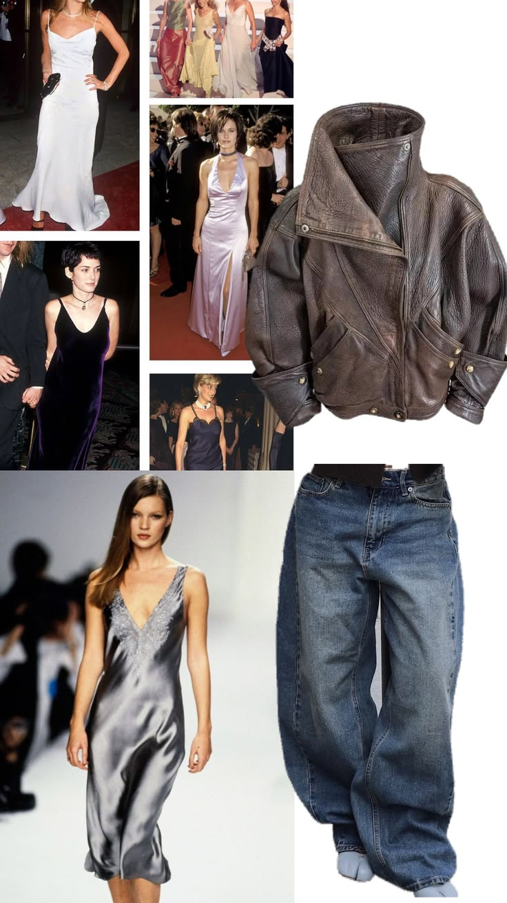

Исследовательский проект • 10 класс
Связь
Времён
Иллюстрированный гид-лукбук о цикличности моды и о том, почему прошлое снова становится трендом.
Смотреть лукбук
Исследовательский проект • 10 класс
Иллюстрированный гид-лукбук о цикличности моды и о том, почему прошлое снова становится трендом.
Смотреть лукбукМода — это не прямая линия, а спираль. Каждые 20-30 лет дизайнеры возвращаются к старым лекалам, чтобы адаптировать их под новый мир.
Наш опрос показал, что 75,9% из вас любят ретро-стиль, но 35,2% не знают, как его носить. Этот гид — ваш ключ к гардеробу, который связывает поколения.
— Полухина Валерия


Эпоха, подарившая нам комфорт. Что именно искать в винтажных магазинах?
Носим как с грубыми ботинками, так и на контрасте поверх легких платьев.
Широкий, свободный крой из 90-х полностью вытеснил узкие скинни.
Идеальная база. Надеваем на белую футболку или под объемный свитер.
Самый популярный тренд у зумеров. Главные мастхэвы нулевых:
Небольшая сумка на коротком ремешке подмышку — главный аксессуар десятилетия.
Ультраширокие штаны с обилием накладных карманов и затяжками снизу.
Зип-худи со стразами или забавными принтами, которые сегодня носят с современными вещами.

Решаем проблему «Как не выглядеть старомодно»
Пусть 70% твоего образа будут базовыми и современными, а 30% — винтажными. Например: современный спортивный костюм + винтажная кожаная куртка из 80-х.
Ретро-вещи часто имеют уникальную фактуру (вельвет, тяжелый деним, шелк). Сочетай их с современными технологичными тканями или гладким базовым трикотажем.
Если боишься радикальных перемен, начни с деталей: очки в стиле «кошачий глаз» (50-е), массивные цепи (90-е) или банданы и «крабики» (00-е).

По результатам опроса, 22% не знают, где найти крутые вещи. Составили гид по локациям СПб.
Самый ценный ресурс. Мамин тренч или папина олимпийка из 90-х имеют уникальное качество. 76% из вас уже находят сокровища там!
Блошиный рынок на Удельной — главная мекка Петербурга для искателей винтажного денима, значков и уникальных кожаных курток.
Магазины, где вещи уже отобраны стилистами. Загляни в «Желтую вешалку», винтажные лавки в Севкабель Порту или сеть благотворительных магазинов «Спасибо!».
Не нашел нужное? Возьми старые джинсы и сделай из них трендовые бермуды или добавь гранж-потертости.
Носят вещи родителей
Обожают стиль 2000-х
Выбирают ради уникальности
Ценят экологичность